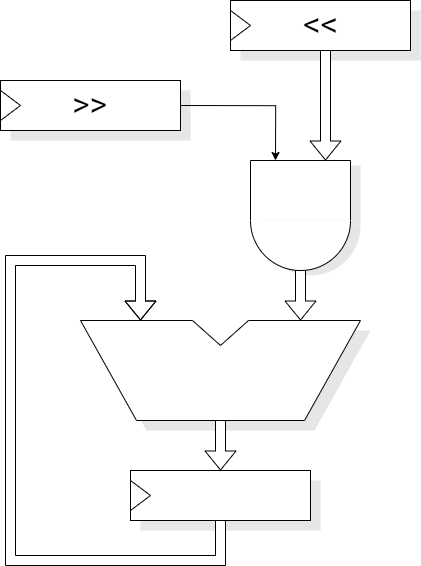

Multiplication is repeated addition. To multiply A and B, simply start with 0 and add A to it B times. This gets the answer but, clearly, is slow if B is large.
‘Long’ multiplication multiplies one digit at a time and shifts the partial result to the appropriate digit position. This is much quicker because there are only <number of digits> additions.
Binary multiplication is easy because you only multiply by 0 or 1 which is an AND function.
There are many ways to implement a multiplier, some of which are sketched out here. The variety of choices is a reason why Verilog synthesizers may not simply implement the ‘*’ operator.
Here are some different microarchitectures for multipliers. This is not an exclusive set, but serves to illustrate some properties. These are based on 8×8 multipliers; multiplication operations scale by O(M2) of course.

With an adder and an accumulator it is possible to multiply two numbers in N cycles, processing each bit of ‘B’ in its own cycle. This gives a latency of N cycles and a throughput of 1/N. It is cheap in hardware and is suitable for ‘occasional’ multiplications, for example as in a general-purpose microprocessor.
By iterating starting at the least significant bit it is possible to improve performance by early termination; when the only bits left to multiply by are zero the result will not change further and iteration can be stopped. This speeds up multiplication by small numbers.
A pipelined multiplier could perform each addition in a separate stage. This would have a latency of N cycles but give a peak throughput of 1. It uses a moderate amount of hardware. It is best suited to stream processing tasks such as Digital Signal Processing (DSP).
The critical path in addition is the carry propagation. It is not necessary to propagate the carry in every addition stage, it can be latched and input to the next significant bit in the next stage, rather than the current one. The advantage of this is that the clock rate can be much higher than if propagating the carry. The disadvantage is that more stages are required because, eventually, the last carry has to be propagated all the way. It thus has a latency of 2N cycles with a throughput of 1, but the cycles can be much shorter. Alternatively, if the cycle time is limited by other units, the carry can be propagated a few places in each cycle.
This architecture is similar to the pipelined architecture but probably a bit faster but with a bit more area cost. However it is a very regular structure.
It is possible to derive all the partial products in a single cycle and add them in a tree of adders. This can give a low-latency addition with quite a high throughput; in principle latency and throughput would both be 1 although the cycle time needs to be long to accommodate multiple additions. In practice such an adder would probably be pipelined and may employ some ‘carry save’ tricks as well. Such a unit could yield a latency of ~log(N) with a throughput of 1 product/ cycle, the cycle length being comparable to the earlier examples. The hardware cost is significant; the low-latency could make this appropriate for a high-performance processor running ‘general’ code.
The descriptions given here are illustrative and contain numerous simplifications. For example, it is common to produce 2-bit rather than 1-bit partial products which halves the number of subsequent additions. However they do illustrate the sort of options open to a designer and that the ‘correct’ choice depends on various circumstances.
If interested, you could look up terms such as: Booth's Encoding, Wallace tree, Dadda multiplier, …
Back to parallel design opportunities.
Forwards to RTL parallelism.
Up to Tradeoffs.